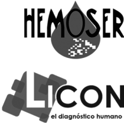

Wadiana compact
Analizador de inmunohematología
DESCRIPCIÓN:
El autoanalizador permite realizar las diferentes técnicas inmunohematológicas automatizando todo el proceso de principio a fin.
CARACTERÍSTICAS:
Identificación: Identificación positiva de reactivos y muestras y reconocimiento de tamaño de tubo y niveles.
Dilución: Dilución y dispensación de las muestras y reactivos en las tarjetas.
Incubación: Incubación, centrifugación y lectura de las tarjetas.
Resultados: Interpretación de los resultados y emisión de informes.
Urgencias: Permite la entrada de muestras urgentes en cualquier momento.
Registro: 0523R2001 SSA
DATOS COMPLEMENTARIOS: Para mayor información, asesoría técnica y pedidos favor de contactarnos en:
HEMOSER, S.A. DE C.V.
Teléfono: (55) 5255-2525
Fax: (55) 5255-3818
e-mail: hemoser@hemoser.com
www.hemoser.com